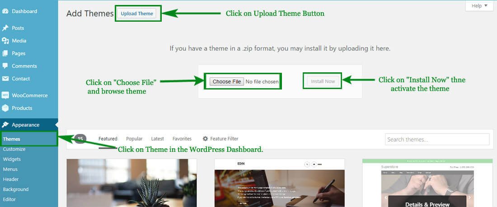
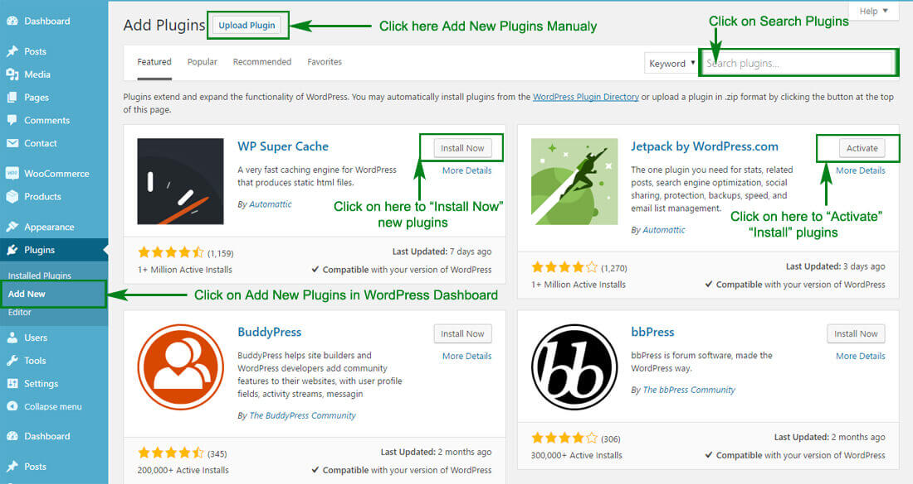
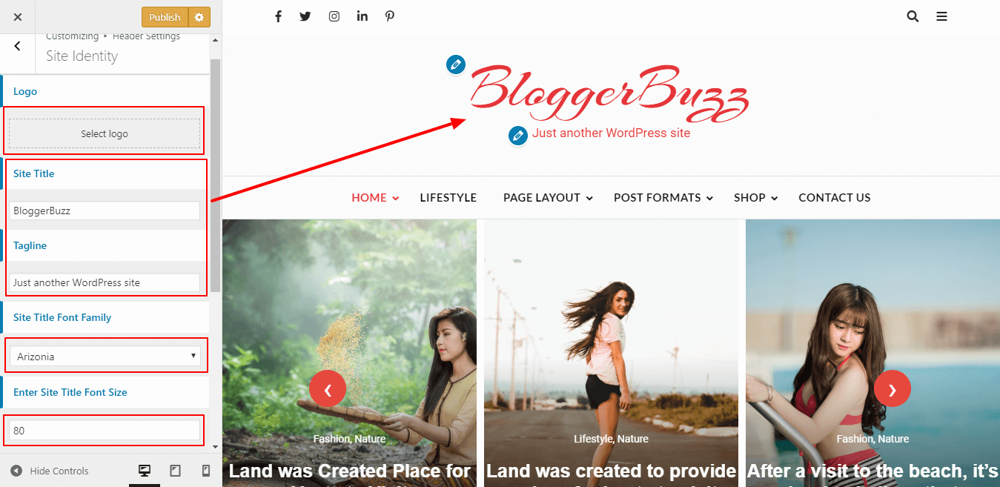
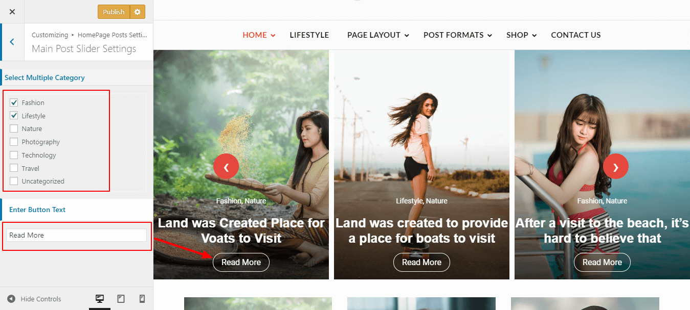
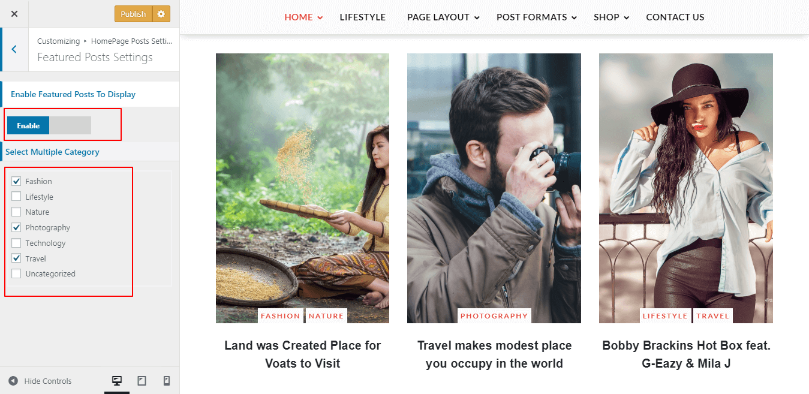
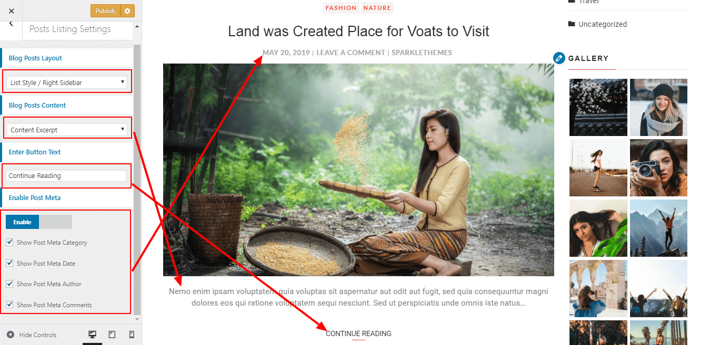
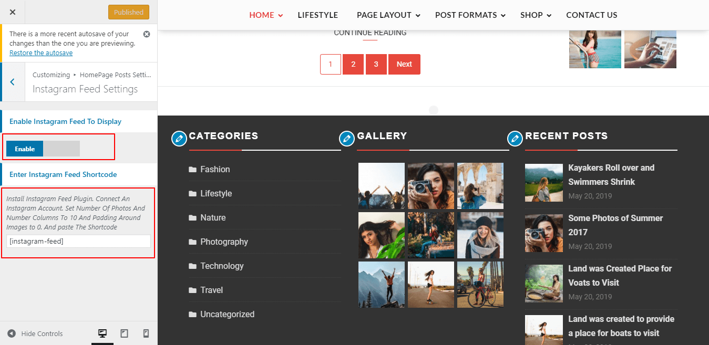
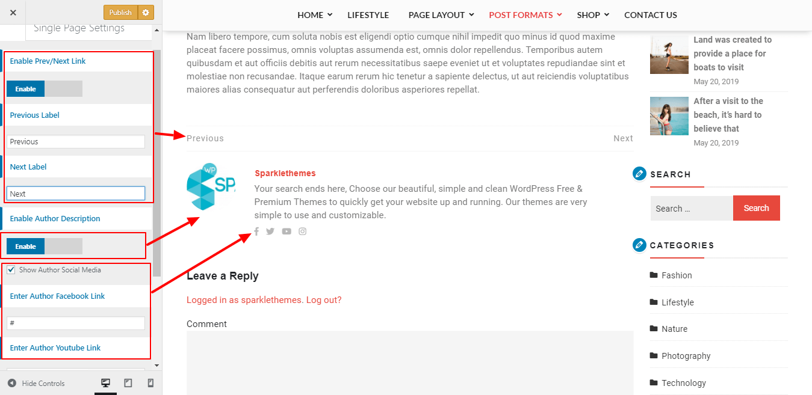
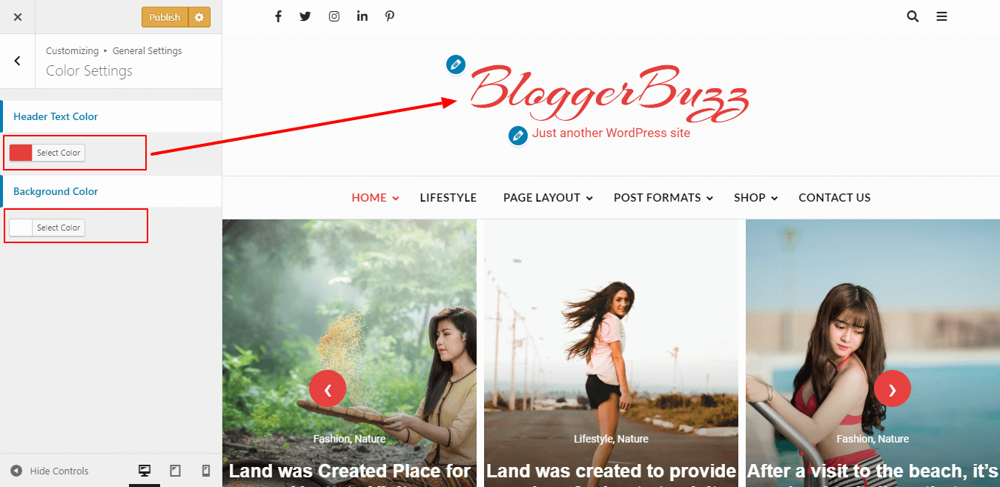
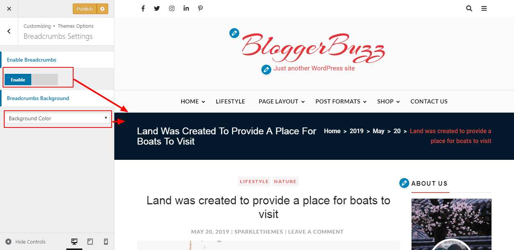

There are two methods to install Blogger Buzz theme. You may either upload the zipped theme file using the WordPress theme installer (Recommended), or you can upload the unzipped theme folder via FTP (Advanced).
Method 1 ( Recommended) : Install Using the WordPress Theme Installer
-
Log into your WordPress site and opens the Administration Panel.
-
Go to Appearance > Themes in the WordPress Dashboard.
-
Click on the Add New button.
-
Search for the Blogger Buzz
-
Select the Blogger Buzz theme
-
Click Install Now

Method 2: Install Using File Transfer Protocol (FTP)
-
Unzip “blogger-buzz.zip” file on your computer.
-
Login using FTP client to access your host web server.
-
Locate the wp-content folder in your WordPress install files.
-
Upload the un-zipped blogger-buzz folder into the: wp-content/themes folder.
Activate the theme
-
Log in to the WordPress Administration Panel.
-
Go to Appearance > Themes in the WordPress menu
-
Hover over the theme thumbnail and click the Activate button.
To install a plugin in your WordPress admin panel and follow the following steps.
Plugin Installing Method
- Log into your WordPress site and opens the Administration Panel.
- Click Navigate to Plugins > Add New in the WordPress Dashboard.
- Search for the name of the plugin you wish to install which will return a list of potential plugins.
- Click Details to read more about a plugin.
- Click “Install Now” if you wish to install the plugin.
- It may ask if you are sure, and you may proceed. The installation will commence once you confirm to proceed.
- After the plugin is downloaded. Go to Plugins>Installed Plugins. Click “Activate Plugin” to make it available for use.

Recommended Plugins : We recommend you to download the following plugins when necessary:
- Jetpack by WordPress.com, by: Automatic (The plugin provides a variety of complementary features for your Theme.)
- Regenerate Thumnails by Alex Mills (Viper007Bond) (If you have existing content, this will help you update your image thumbnails sizes.)
- Go to Appearance> Customize > Header Settings > Site Identity
- Click Select logo by clicking Select Logo.
- Upload and select the desired image.
- Enter the Site Title and Tagline
- Select Site Title Font Family.
- Enter Site Title Font Size.
- Check Display Header Text for the Site title and Tagline to appear on your homepage.
- Click Select Image under Site Icon
- Upload and select the desired image. (The Site Icon/ favicon is used as a browser and app icon for your site.
- Click on Publish.

- Log into your WordPress site and opens the Administration Panel.
- Go to Dashboard > Appearance > Customize > HomePage Post Setting > Main Post Slider Setting.
- Select Post Category To Display As Slider
- Enter Button Text.
- Click On Pulish.

- Log into your WordPress site and opens the Administration Panel.
- Go to Dashboard > Appearance > Customize > HomePage Post Setting > Featured Post Setting.
- Enable Option To Display Featured Post Section.
- Select Post Category To Display.
- Click On Pulish.

- Log into your WordPress site and opens the Administration Panel.
- Go to Dashboard > Appearance > Customize > HomePage Post Setting > Post Listing Setting.
- Select Post Display Layout.
- Select Post Content Option.
- Enter Read More Button Text.
- Enable Option Post Meta To Display And Check/Uncheck The Given Option As Per You Want.
- Click On Pulish.

- Log into your WordPress site and opens the Administration Panel.
- Go to Dashboard > Appearance > Customize > HomePage Post Setting > Instagram Feed Setting.
- Enable Option Instagram Feed To Display.
- Install Instagram Feed Plugin. Connect An Instagram Account. Set Number Of Photos And Number Columns To 10 And Padding Around Images to 0. And Enter The Shortcode.
- Click On Pulish.

- Log into your WordPress site and opens the Administration Panel.
- Go to Dashboard > Appearance > Customize > Theme Options > Single Page Setting.
- Enable Option Prev/Next Link For Post Navigation.
- Enter Previous/Next Text.
- Enable Option Author Bio Description to Display.
- Check Option To Show Author Social Media Links.
- Enter Social Media URL.
- Click On Pulish.

- Log into your WordPress site and opens the Administration Panel.
- Go to Dashboard > Appearance > Customize > General Settings > Color Setting.
- Select Color As Per You Want.
- Click On Pulish.

- Log into your WordPress site and opens the Administration Panel.
- Go to Dashboard > Appearance > Customize > Theme Options > Breadcrumbs Settings.
- Enable Option Breadcrumbs To Display.
- Select Breadcrumbs Background Type.
- For Breadcrumbs Background Image > Upload Image.
- Click On Pulish.

Social Media Links Settings